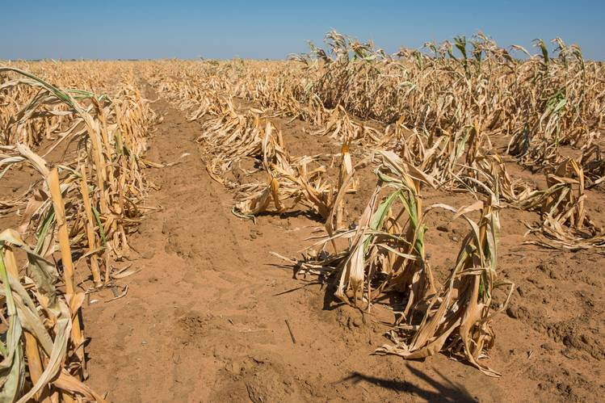

Global Warming is a big problem because the Earth's temperature is rising and it is affecting everything around us. For example: Global Warming is causing drastic changes in rainfall patterns and is causing more frequent weather disasters. This includes longer droughts, frequent wildfires,increased hurricanes and storms etc.

The main cause of global warming are greenhouse gases. Humans burn an extremely high amount of fossil fuels which accumulates in the Earth's atmosphere.Thus, increasing the Earth's average global temperature. Most of our greenhouse gases come from cars, buildings, factories, and power plants. Furthemore, global warming is an effect of deforestation. Trees are cut down and burned for fuel. Trees store carbon and when they are cut down, the carbon is released into the air as carbon dioxide. Livestock such as cows, sheeps, and pigs produce a lot of methane (a greenhouse gas). High amounts of methane are produced when livestock are grazed at a large scale.
| Cause | Percentage |
|---|---|
| Energy Supply | 25.9% |
| Industry | 19.4% |
| Forestry | 17.4% |
| Agriculture | 13.5% |
| Transport | 13.1% |
| Buildings | 7.9% |
| Waste And Wastewater | 2.8% |
In recent years, researchers and scientists have been monitoring ice glaciers. They have discovered that they have been melting at an alarming rate due to the increasing temperatures. Thus, more water is flowing into our oceans and increasing sea levels. This puts us at risk of floods and loss of biodiversity. Melting glaciers are putting animals at risk of extinction. Some arctic animals heavily rely on the ice for food. They use the ice to hunt for prey. But with the ice melting, food is getting harder and harder to find. Furthermore, the increased global temperature is causing seawater to expand. The increased sea temperature puts seabeds and marine life at danger. Ocean acidification is also a result of global warming. The ocean is absorbing greenhouse gases such as carbon dioxide. The shells of marine life are dissolving in the acidity of the oceans.
Frequent droughts are a result of global warming. Droughts occur when there is not enough rainfall in an area due to abnormal rainfall patterns. These droughts destroy plants and crops all around the Earth. Thus resulting in a lack of food and water for wildlife. Without a convenient source of food or water, wildlife are more prone to catching diseases and infections. Farmers also lose money when their crops are destroyed, making their life very hard. Furthermore, droughts destroy marine and wildlife habitats. This includes forests, lakes, rivers etc. With no moisture, the forests are dryer, making them very prone to fire. Very poor soil quality is another result of droughts.
Global warming is forcing animals to migrate to higher altitudes due to the increase in temperature. Some animals may not be able to adapt to the rising temperatures and will go extinct. For example, the temperature may rise faster than animals can migrate. In addition, higher temperatures will allow diseases that were confined to hot climates to travel. This will infect animals and humans that were formerly protected from the disease. Furthermore, higher temperatures are destroying animals' natural habitats. Frequent droughts are causing animals to seek out cooler areas and more water. Wildfires and deforestation are destroying numerous natural habitats. There is a shortage of food due to unusual rainfall patterns.


 HTML Validator
CSS Validator
HTML Validator
CSS Validator